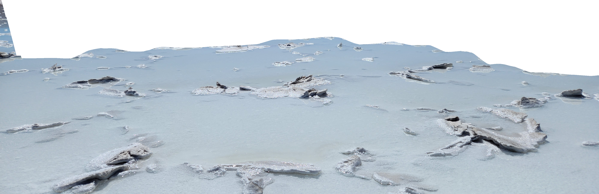
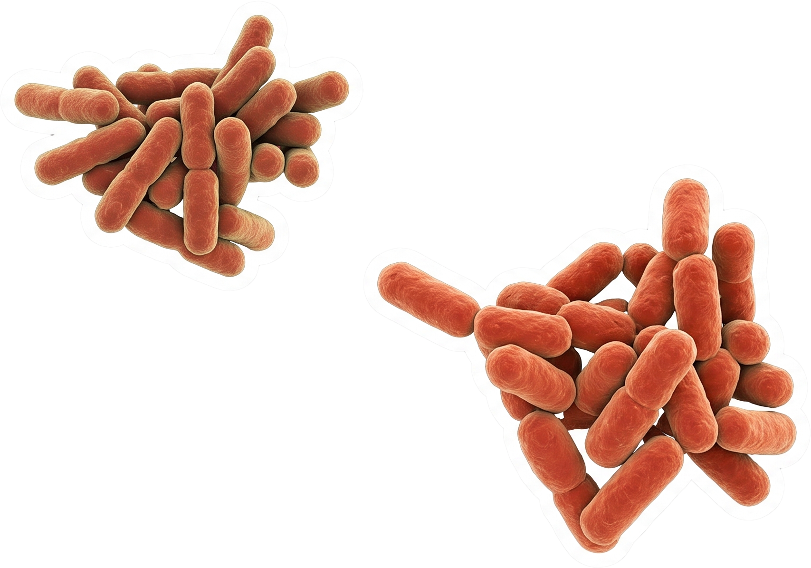
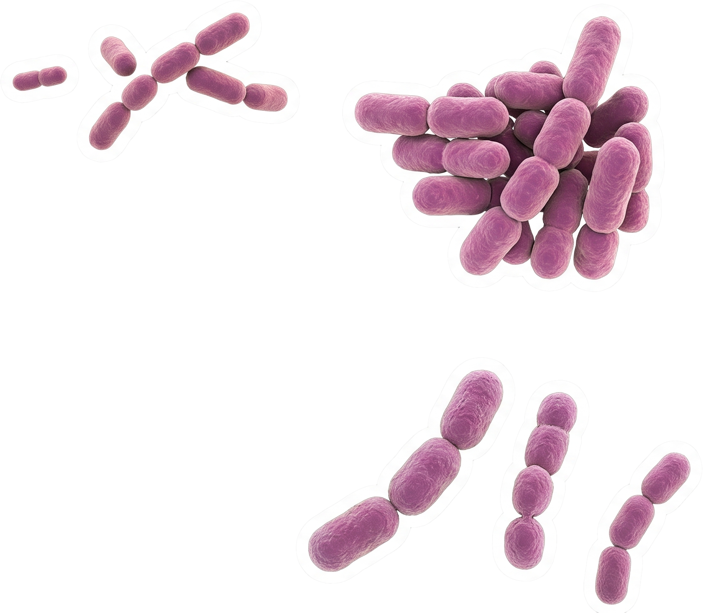
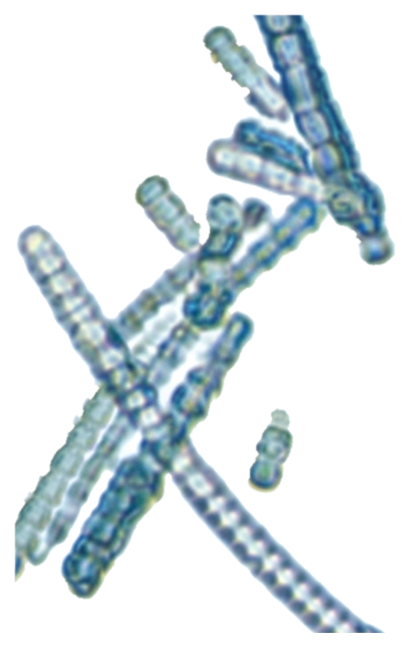
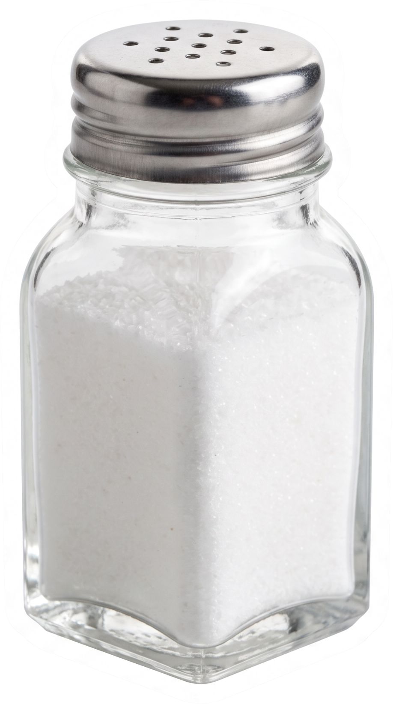
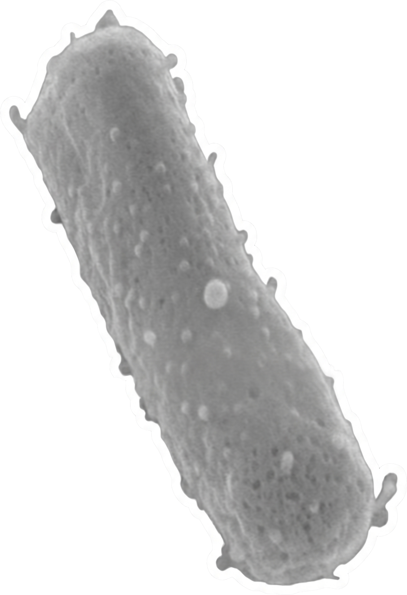
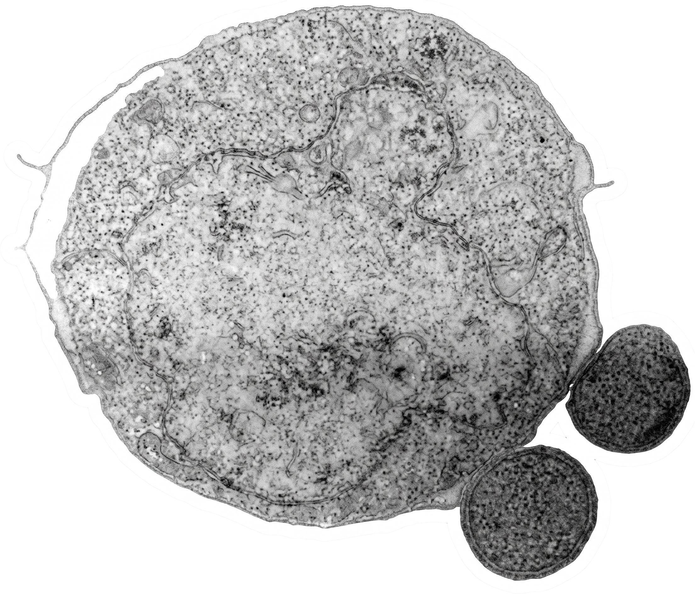
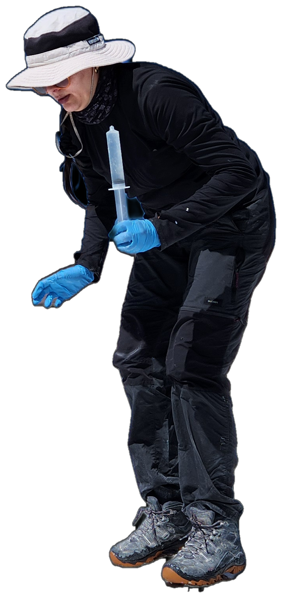
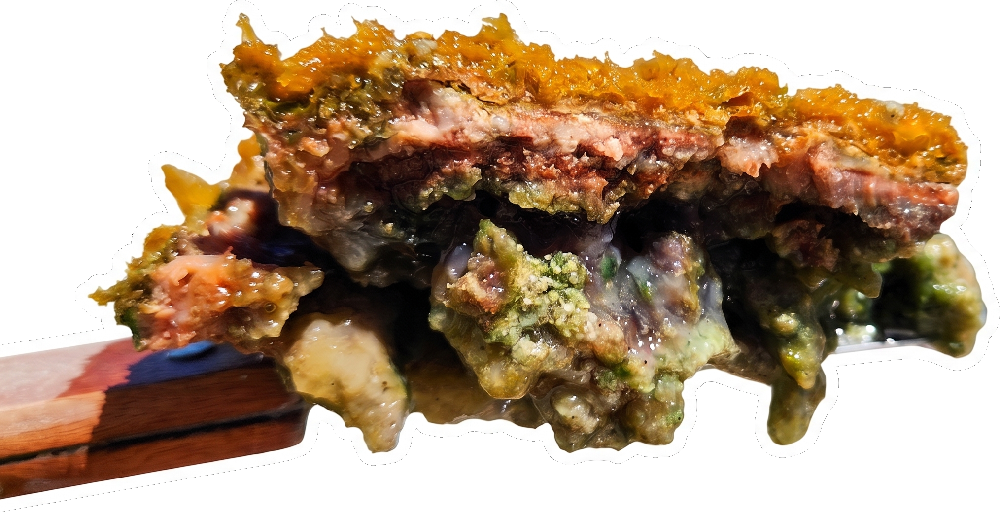
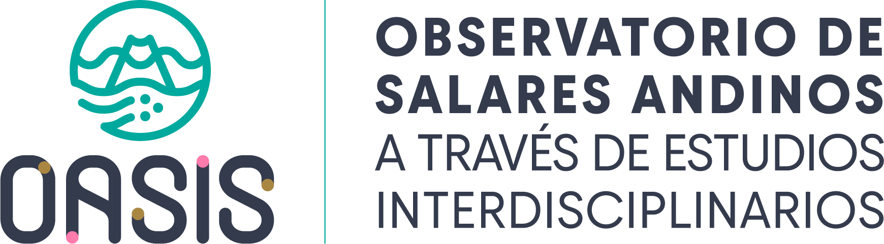

Salar de Maricunga.
Un laboratorio natural a más de 3.700 metros de altura.



Pseudomonadota y Bacteroidota, dos grupos de bacterias, dominan casi todo el sistema.[cite: 1]

Donde el agua es menos salada aparecen Cyanobacteriota y Chloroflexota, bacterias que aprovechan la luz del sol.[cite: 2]
Donde la sal es extrema, aparecen arqueas halófilas como Halobacteriota y Nanoarchaeota.[cite: 3]



Pero el lugar exacto donde se toma la muestra pesa incluso más que la sal misma.[cite: 4]


Las arqueas no son bacterias: son otro dominio de la vida, especialistas en vivir al límite.
Continuará...
